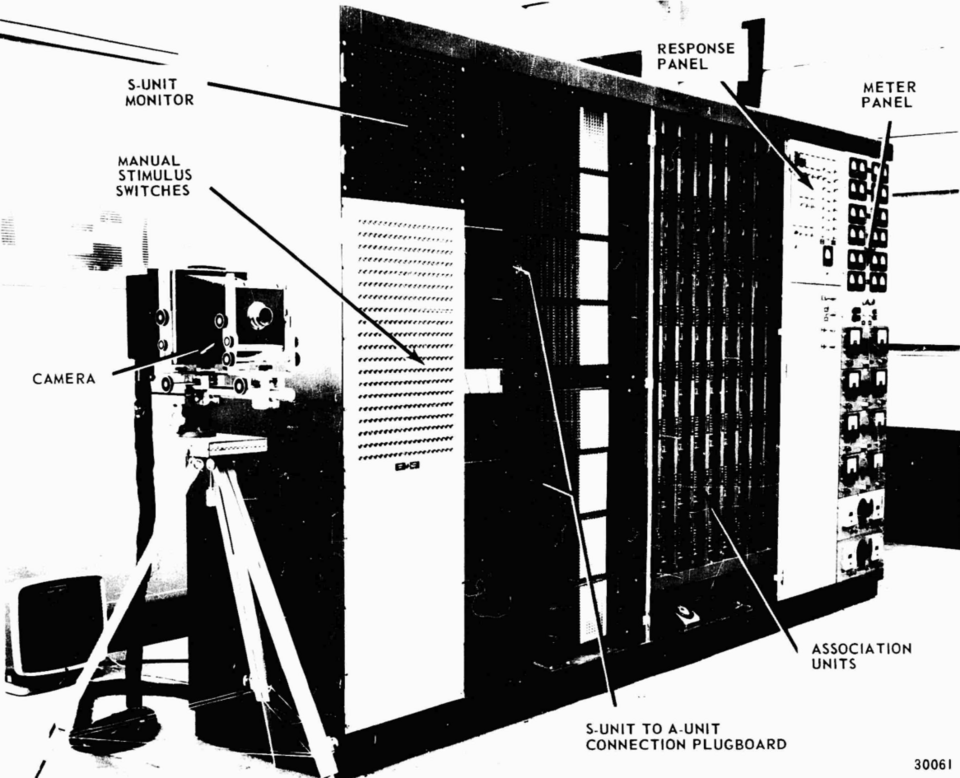
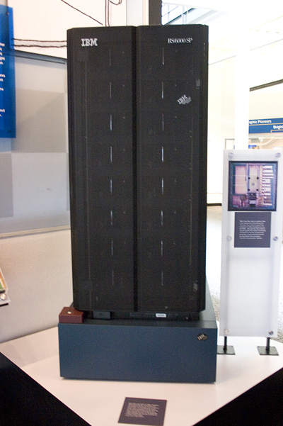
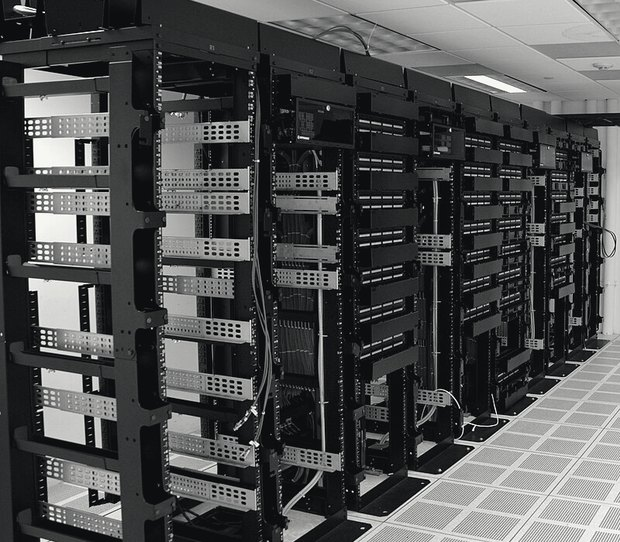
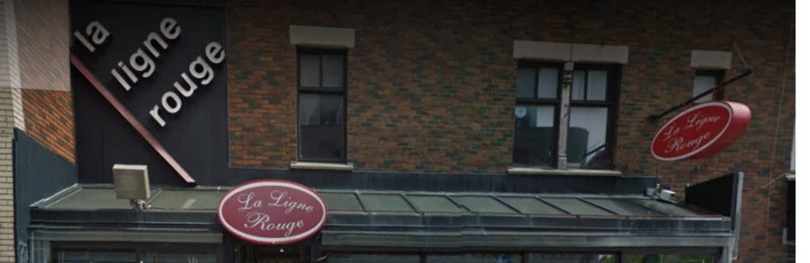
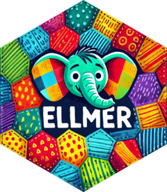
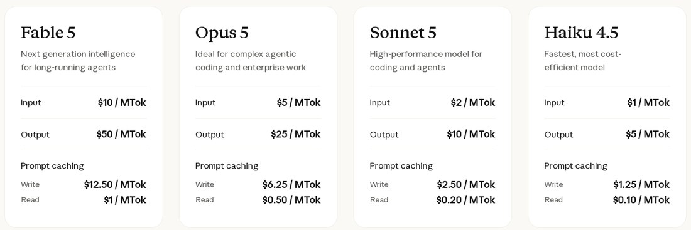

POL-2000 · Méthodologie quantitative
Les variables latentes
Séance 9 · jeudi 5 novembre 2026
Faculté des sciences sociales Automne 2026
Les variables latentes
Mesurer un concept latent et introduction aux grands modèles de langue.
Aujourd’hui
Mesurer un concept
On veut étudier des choses qu’on ne voit pas.
Vos questions de recherche
- Dans quelle mesure la scolarité influence-t-elle l’intérêt pour la politique ?
- Dans quelle mesure gagner une élection rend-il plus satisfait de la démocratie ?
- Dans quelle mesure la scolarité rend-elle plus à gauche ?
Mesure ? Pourquoi ce mot-là ?
Mesurer, ça veut dire quoi ?
Mesurer, c’est mettre un nombre sur une chose. Pour pouvoir calculer.
Mesurer un concept
Les données, ce sont des nombres mis sur des concepts. Tout le reste du cours calcule avec.
Facile à mesurer, impossible à observer
Le défi : mettre un nombre sur une chose qu’on ne peut pas observer.
Pourquoi ne pas simplement demander ?
« Où vous placeriez-vous sur une échelle de 0 (gauche) à 10 (droite) ? »
Mais un 3, est-ce le même 3 pour tout le monde ?
placé par les gens qui se disent à gauche placé par les gens qui se disent à droite
Le même parti, un autre nombre, selon qui répond.
CES 2025, sondage de campagne, pondéré. Moyennes de 0 à 10. Gauche : se placent de 0 à 2, n = 2 721. Droite : de 8 à 10, n = 2 495.
Alors, on construit une échelle
On ne peut pas l’observer directement.
Merkley, E. (2022). Polarization Eh? Ideological Divergence and Partisan Sorting in the Canadian Mass Public. Public Opinion Quarterly, 86(4). Huit questions de la CES, deux dimensions, un seul score d’idéologie.
Des échelles, vous en utilisez tous les jours
Comment savoir si une échelle est bonne ?
Pour un concept difficile à mesurer, il faut les deux.
Prouver la fiabilité
Comment montrer, avec des chiffres, que des questions mesurent la même chose ?
Un examen d’histoire au secondaire
Douze élèves, rangés selon leur moyenne en histoire.
Données fictives : un schéma.
Chaque question d’une échelle doit aller avec chaque autre.
L’analyse factorielle fait cette vérification pour toutes les questions à la fois, et repère celle qui ne suit pas.
Trois chiffres, trois seuils
Les énoncés répondent-ils ensemble ?
La cohérence de tout le groupe. De 0 à 1.
Y a-t-il un concept dominant ?
La force de ce que les énoncés ont en commun.
Cet énoncé en fait-il partie ?
Un chiffre par énoncé : sa contribution au concept.
topdown_fa(df)Pratique dans R
Construire une échelle gauche-droite avec la CES 2025.
La scolarité rend-elle plus à gauche ?
Un seul chiffre de 0 à 10 ne suffit pas (diapo 9). On lance beaucoup de questions, on garde celles qui collent.
Quatorze questions qu’on croit de gauche ou de droite
De 0 (gauche) à 1 (droite), comme l’auto-positionnement de la diapo 9.
Planifions notre code
# 1. Charger ces2025.rds, créer df_clean
# 2. Regarder une question
# 3. De 0 (gauche) à 1 (droite) : l'économie, la société, nos paris
# 4. Installer sondr, une seule fois
# 5. L'analyse factorielle : les quatorze
# 6. Sans celles qui ne collent pas
# 7. L'échelle : la moyenne
# 8. La validité : les partis, l'auto-positionnement
# 9. L'appliquer : lm(ideologie ~ scolarité)
# 10. Sauvegarder df_cleanD’abord les commentaires. Le code vient ensuite, sous chacun.
Une question, telle que la CES la code
> table(as_factor(df_raw$pes25_equalrights), useNA = "ifany")
1. Strongly disagree 2. Somewhat disagree
4806 2692
3. Neither agree nor disagree 4. Somewhat agree
2603 2156
5. Strongly agree 6. Don't know/ Prefer not to answer
1442 376
<NA>
6105 pes25 : après l’élection. 1 = fortement en désaccord … 5 = fortement d’accord, 6 = ne sait pas. NA : pas au sondage postélectoral
> ▍L’économie : de 0 (gauche) à 1 (droite)
> accord <- function(x) ifelse(x %in% 1:5, (x - 1) / 4, NA)
une fonction : 1 à 5 devient 0 à 1, le reste NA
> df_clean$ideo_niveau_vie <- case_when( df_raw$pes25_stdofliving == 1 ~ 0, df_raw$pes25_stdofliving == 2 ~ 1 )
voir à un niveau de vie décent (0), laisser faire (1)
> df_clean$ideo_inegalites <- 1 - accord(df_raw$pes25_govt_act_ineq)
d’accord = gauche : on retourne, 1 − x
> df_clean$ideo_prive <- accord(df_raw$pes25_privjobs)
d’accord = droite
> df_clean$ideo_merite <- accord(df_raw$pes25_blame)
> df_clean$ideo_prog_sociaux <- accord(df_raw$pes25_deserve2)
> ▍La société, la même recette
> df_clean$ideo_egalite <- accord(df_raw$pes25_equalrights)
d’accord = droite
> df_clean$ideo_femmes <- accord(df_raw$pes25_womenhome)
> df_clean$ideo_integration <- accord(df_raw$pes25_fitin)
> df_clean$ideo_immig_emplois <- accord(df_raw$pes25_immigjobs)
> df_clean$ideo_modes_vie <- accord(df_raw$pes25_newerlife)
> df_clean$ideo_autochtones <- 1 - accord(df_raw$pes25_indig_deserve)
d’accord = gauche : 1 − x
> ▍Nos paris
> df_clean$ideo_commerce <- accord(df_raw$pes25_trade)
pro-marché, donc à droite ?
> df_clean$ideo_defense <- case_when( df_raw$cps25_spend_defence == 1 ~ 0, df_raw$cps25_spend_defence == 2 ~ 0.5, df_raw$cps25_spend_defence == 3 ~ 1 )
plus d’armée, donc à droite ?
> df_clean$ideo_francais_qc <- case_when( df_raw$pes25_langQC == 2 ~ 1, df_raw$pes25_langQC == 1 ~ 0 )
le français pas menacé, donc à droite ? On verra
> ▍sondr, puis les gens qui ont répondu aux quatorze
> install.packages("remotes") # une seule fois
> remotes::install_github("clessnverse/sondr") # une seule fois
sondr n’est pas sur CRAN : on l’installe depuis GitHub
> library(sondr)
> df_fa <- na.omit(select(df_clean, starts_with("ideo_")))
na.omit : seulement les gens qui ont répondu aux quatorze
> nrow(df_fa)
[1] 8529
8 529 personnes
> ▍topdown_fa(df_fa)une ligne : alpha, valeur propre, saturations

Trois questions ne collent pas
df_fa2 <- select(df_fa, -ideo_commerce, -ideo_defense, -ideo_francais_qc)
topdown_fa(df_fa2)sans les trois : alpha 0,84, tout au-dessus du seuil

Fiable, oui. Valide ? Les partis, de gauche à droite
CES 2025, sondage de campagne, sans pondération. Intention de vote; partis avec au moins 50 personnes dans l’échelle (NPD 687 · PLC 3 611 · Verts 163 · Bloc 538 · PCC 2 525 · PPC 105).
Avec l’auto-positionnement de 0 à 10 (diapo 9) : corrélation de 0,60. Imparfait, mais dans le même sens.
L’échelle : la moyenne des onze
> df_clean <- select(df_clean, -ideo_commerce, -ideo_defense, -ideo_francais_qc)
on retire les trois qui ne collent pas
> df_clean$ideologie <- rowMeans(select(df_clean, starts_with("ideo_")))
la moyenne des onze, ligne par ligne
> summary(df_clean$ideologie)
Min. 1st Qu. Median Mean 3rd Qu. Max. NAs 0.0000 0.2727 0.4318 0.4324 0.5682 1.0000 9922
de 0 (gauche) à 1 (droite)
> ▍hist(df_clean$ideologie, main = "", xlab = "Idéologie (0 = gauche, 1 = droite)", ylab = "Personnes")
une variable comme une autre, de 0 à 1

La scolarité rend-elle plus à gauche ?
> df_clean$universitaire <- case_when( df_raw$cps25_education %in% 8:11 ~ 1, df_raw$cps25_education %in% 1:7 ~ 0 )
universitaire : a fréquenté l’université (8 à 11) ou non (1 à 7)
> modele <- lm(ideologie ~ universitaire, data = df_clean)
> modele
Call:
lm(formula = ideologie ~ universitaire, data = df_clean)
Coefficients:
(Intercept) universitaire
0.47060 -0.07096
-0,071 : sur une échelle de 0 à 1, les universitaires sont 0,07 plus à gauche
> ▍Retenir
- Mesurer, c’est mettre un nombre sur une chose, même une chose qu’on ne peut pas observer.
- Une seule question ne suffit pas. On construit une échelle.
- Une bonne échelle est fiable et valide. La fiabilité est statistique, la validité est théorique.
- Une question qui ne suit pas : elle mesure autre chose (on la retire) ou elle va à l’envers (on la retourne).
Qu’est-ce que l’IA ?
Il y a plusieurs définitions de l’IA
- A Est-ce que le système peut décider et agir ? Russell et Norvig 2020
- B Est-ce que le système peut passer pour un humain ? Turing 1950
- C Est-ce que le système décide par la logique ? Jordan et Mitchell 2015
Aucun consensus : beaucoup plus de définitions recensées. Legg et Hutter 2007 Wang 2019
Les grands modèles de langue répondent aux trois
- A Ils décident et agissent
- B Ils passent pour des humains Jones et Bergen 2025
- C Ils prédisent le prochain jeton par la statistique
Histoire de l’IA
1950
Le jeu de l’imitation
Turing
Computing Machinery and Intelligence Turing 1950
1956
Le terme est forgé
Dartmouth
A Proposal for the Dartmouth Summer Research Project on Artificial Intelligence McCarthy et al. 1955

1958
Le perceptron
Rosenblatt

1997
Deep Blue bat Kasparov
IBM
2003
Premier modèle de langue neuronal
Bengio · Montréal
A Neural Probabilistic Language Model Bengio et al. 2003

2009
ImageNet
Fei-Fei Li
2012
AlexNet
Krizhevsky · Sutskever · Hinton
ImageNet Classification with Deep Convolutional Neural Networks Krizhevsky et al. 2012
2014
Google achète DeepMind
2015
Le mécanisme d’attention
Bahdanau · Cho · Bengio
Neural Machine Translation by Jointly Learning to Align and Translate Bahdanau et al. 2015
2016
AlphaGo bat Lee Sedol
Hassabis
2017
Le transformer
Vaswani et al. · Google
Attention Is All You Need Vaswani et al. 2017
2018
GPT-1
2019
GPT-2
2020
GPT-3
175 milliards de paramètres
Language Models are Few-Shot Learners Brown et al. 2020
2021
Anthropic est fondée
2022
ChatGPT
30 novembre
2023
GPT-4 et Claude
mars
2024
Deux prix Nobel
Hinton · Hassabis
2025
LawZero
Bengio · Montréal
Arbre généalogique de l’IA
Schéma original, inspiré de l’arbre évolutif des LLM de Yang et al. 2023.
Comment fonctionne
un modèle de langage
Les données d’entraînement
Parts et époques : corpus d’entraînement de LLaMA, tableau 1 Touvron et al. 2023. Sites les plus représentés de C4 Dodge et al. 2021.
Tout ce qu’il fait, c’est prédire le jeton suivant
Décris l'hiver à Québec en une phrase courte.
Le modèle ne connaît que ce texte. Il doit produire le jeton suivant.
Le modèle ne voit pas des mots
La phrase qu’il vient d’écrire, telle qu’il l’a vue :
Même contenu, +56 % de jetons en français.
Le surcoût vaut pour toutes les langues éloignées de l’anglais, et la qualité y baisse aussi Ahia et al. 2023.
Ce n’est pas une base de connaissances
UNE BASE DE DONNÉES
- trouvéle fait, à l'identique
- rien trouvé« je n'ai pas »
Deux issues possibles.
UN MODÈLE DE LANGAGE
- toujoursquelque chose de plausible
- —cette branche n'existe pas
Une seule issue possible.
Une référence bibliographique produite par un modèle est une hypothèse de référence jusqu’à ce que vous l’ayez vérifiée dans un catalogue. Le principe à retenir
Un poids, c’est la force d’un lien
Un poids, c'est la force d'un lien entre deux neurones. Épais s'il compte, mince sinon ; bleu s'il pousse, gris s'il retient.
Les 32 traits de ce dessin sont 32 vrais poids, lus dans le fichier de Qwen2.5-0.5B. Le modèle en a 494 032 768.
Poids réels de q_proj, couche 0, lus dans le fichier model.safetensors de Qwen2.5-0.5B. Modèle ouvert : on peut le télécharger et tout lister.
L’hallucination n’est pas un bug
Sortie contrainte · vérification externe · validation sur vérité terrain : les trois parades.
Les biais
Le biais entre à trois endroits
Deux tiers du corpus sont un balayage du web
Des humains écrivent les réponses exemplaires, puis les classent
L’optimisation retient la régularité majoritaire
Il porte les trois.
Aucune étape suivante ne corrige la précédente.
Composition du corpus d’entraînement de LLaMA Touvron et al. 2023.
Pourquoi ne pas utiliser le chat classique
mais l’API ?
Un API, c’est une adresse à qui on écrit
Le modèle ne s’installe pas sur votre poste. Votre script lui envoie du texte ; il en renvoie. Un API, c’est ce point d’entrée : une adresse à qui on écrit, et qui répond.
Les LLMs sont tangibles

- 100 000 GPU dans un seul bâtiment, à Memphis
- 34 841 foyers autant d’électricité que ce nombre de foyers québécois, sur une année
- 35 turbines à gaz brûlées sur place pour l’alimenter
- 700 000 litres d’eau douce évaporés pour entraîner GPT-3
Colossus, à Memphis : nombre de GPU NVIDIA 2024, turbines TechCrunch 2025. Équivalent en foyers calculé d’après la fiche technique du H100 SXM et la consommation résidentielle moyenne d’Hydro-Québec. Eau Li et al. 2023.
L’eau et l’électricité des centres de données
Eau consommée, pas prélevée : USGS (2015), GCSAA (2024, arrosage), LBNL (2023; « + électricité » : l’eau des centrales qui les alimentent). Électricité : AIE, Energy and AI (2025); Our World in Data (climatisation); estimation de l’industrie (aluminium); indice de Cambridge (Bitcoin). Centres de données : toute l’informatique, pas seulement l’IA.
Une requête d’IA, à côté d’autres usages du numérique
Chaque trait vaut dix fois le précédent. En rouge : l’IA.
IA : centre de données seulement (Google, OpenAI, MIT Technology Review, 2025). Streaming : écran, réseau et centre de données compris, moyenne 2019 (AIE, 2020). Les deux ne comptent pas la même chose.
Chat vs API
DANS UNE FENÊTRE DE CLAVARDAGE
la requête grossit à chaque tour
- appel 1 systèmemsg 1
- appel 2 systèmemsg 1réponse 1msg 2
- appel 3 systèmemsg 1réponse 1msg 2réponse 2msg 3
La réponse dépend de tout ce qui précède.
PAR L'API
chaque appel repart à neuf
- appel 1 consignedocument 1
- appel 2 consignedocument 2
- appel 3 consignedocument 3
Trois appels de même forme, trois réponses comparables.
Ce que l’API rend possible
- modèle
- température
- prompt
- données
- log
- coût
aucune de ces valeurs n'est exposée
- modèle
- gemini-3.5-flash
- température
- 0
- prompt
- enregistré dans un script
- données
- sauvegardées et accessibles
- log
- un fichier par exécution
- coût
- au jeton, par appel
tout cela s'écrit dans votre méthodologie
La température
« Décris l'hiver à Québec en une phrase courte. », le jeton suivant
- L 100
- 0
- Un 0
- F 0
- " 0
- L 61
- 14
- Un 10
- F 9
- " 7
- L 37
- 19
- Un 16
- F 15
- " 13
Zéro rend les sorties plus stables, jamais déterministes : le calcul en virgule flottante et le routage entre serveurs laissent une variation résiduelle.
Pause
Pendant la pause, allez chercher votre clé.
- aistudio.google.com/apikeyun compte Google suffit · aucune carte de crédit
Premier appel,
sur de vraies données
De la réponse en texte libre à la variable exploitable.
La Ligne Rouge

 Google Maps 551 avis récoltés Fiche Pages Jaunes du restaurant
Google Maps 551 avis récoltés Fiche Pages Jaunes du restaurantTrès bon la poutine viande!
Comme dans le temps . Merci d’être de retour . Toujours aussi bon
Food is good but the man taking orders is very rude .
Bonne nourriture. Mais le staff n'est pas toujours accueillant.
looks better than it tastes
One of the worst poutine I've ever had. Cook your fries more
Avant : Utilisation de dictionnaires
| ligne | review_text | review_rating | score |
|---|---|---|---|
| 7 | Très bon la poutine viande! | 5 | -1.00 |
| 442 | The poutine is awful....thanks god it was a small portion. | 2 | -0.33 |
| 259 | Bonne nourriture. Mais le staff n'est pas toujours accueillant. | 3 | indéfini |
| … | 548 autres lignes | … |
for (i in seq_len(nrow(donnees))) { ... }Maintenant : Utilisation de LLMs
| ligne | review_text | review_rating | score |
|---|---|---|---|
| 7 | Très bon la poutine viande! | 5 | +0.85 |
| 442 | The poutine is awful....thanks god it was a small portion. | 2 | -0.85 |
| 259 | Bonne nourriture. Mais le staff n'est pas toujours accueillant. | 3 | +0.20 |
| … | 548 autres lignes | … |
for (i in seq_len(nrow(donnees))) { ... }On ne change pas la donnée, on change la consigne
« Excellents gyros. Bien sûr, le service est raide, c'est fermé pour on ne sait pas quoi, mais on s'en fout. On n'est pas à Saint-Lambert, pas besoin de courbettes. Amenez votre monnaie papier. »
{"score":0.65}{"niveau":3,"scolarite":"collège"}{"n":0,"fautes":[]}{"themes":["nourriture","service","horaire","paiement"]}{"retour":"oui","confiance":0.9}{"registre":"familier","ironie":false}Une seule donnée, six questions. Le dictionnaire n'en savait poser qu'une.
Six appels réels à gemini-3.5-flash-lite, température 0, sortie JSON imposée.

ellmer
Un package R pour parler aux modèles de langage.
- Vingt-trois fournisseurs, une seule syntaxe
- Changer de modèle tient sur une ligne
- Maintenu par l’équipe de tidyverse
install.packages("ellmer")
chat_openrouter(model = "google/gemini-3.5-flash-lite")
chat_google_gemini(model = "gemini-3.5-flash")
chat_openai(model = "gpt-4o-mini")
chat_anthropic(model = "claude-sonnet-5")
chat_ollama(model = "gemma3") # sur VOTRE machinePoser une question, obtenir du texte
library(ellmer)
chat <- chat_openrouter(
model = "google/gemini-3.5-flash-lite",
echo = "none"
)
chat$chat("Quelle est la capitale de la France ?")
#> La capitale de la France est **Paris**.Le même geste, sur un vecteur
library(ellmer)
library(jsonlite)
pays <- c("France", "Japon", "Bresil")
capitales <- character(length(pays))
for (i in seq_along(pays)) {
prompt <- paste0(
"Quelle est la capitale de ", pays[i], " ? ",
'Reponds uniquement par {"capitale": "..."}'
)
chat <- chat_openrouter(model = "google/gemini-3.5-flash-lite", echo = "none")
reponse <- chat$chat(prompt)
capitales[i] <- fromJSON(reponse)$capitale
}
data.frame(pays, capitales)
#> pays capitales
#> 1 France Paris
#> 2 Japon Tokyo
#> 3 Bresil BrasiliaComment choisir son modèle ?
- openai93
- qwen51
- google41
- anthropic28
- mistralai19
- … 55 autres fournisseurs
- Combien ça coûtede 0,01 $ à 150 $ le million de jetons, un facteur 15 000
- Où passent les donnéeschez le fournisseur, ou sur votre machine si le modèle est ouvert
- Le modèle est-il épinglableun nom de version qui ne bougera pas, sinon la reproductibilité tombe
- Fait-il la tâchela seule réponse valable vient d’une comparaison sur VOTRE corpus
Catalogue OpenRouter relevé le 24 août 2026.
Comment interpréter le coût

Les 551 avis de La Ligne Rouge, classés une fois
- Haiku 4.5 7,6 ¢
- Sonnet 5 15,1 ¢
- Opus 5 37,8 ¢
- Fable 5 75,6 ¢
- 17 235jetons : les avis
- 25 346jetons : la consigne, renvoyée 551 fois
La consigne coûte plus cher que les données. Elle repart entière à chaque appel.
Tarifs relevés sur anthropic.com/pricing le 24 août 2026. Jetons comptés sur les 551 avis réels du corpus; les prix d’Anthropic s’appliquent à leur propre tokeniseur, l’ordre de grandeur tient.
LM Arena
- 1 Vous posez une question la vôtre, n’importe laquelle
- 2 Deux modèles répondent anonymes, tirés au hasard
- 3 Vous votez A, B, égalité, ou les deux mauvais
- 4 Les noms sont révélés après le vote, jamais avant
Un classement à la Elo, calculé sur des centaines de milliers de duels. Plus de 240 000 votes dès la publication de la méthode.
Ce que le public préfère sur des questions quelconques. Pas la justesse sur votre corpus, ni sur votre tâche. Un modèle premier au classement peut être mauvais chez vous.
Méthode et volume de votes Chiang et al. 2024.
La clé se dépose dans .Renviron
# Dans la console R
usethis::edit_r_environ()
# Le fichier s'ouvre. On y ajoute UNE des deux lignes:
GEMINI_API_KEY=votre_cle_ici
# OU
OPENROUTER_API_KEY=votre_cle_ici
# Puis: Session > Restart R
# Sans redemarrage, R ne verra rien.Jamais
Jamais dans un script. Jamais dans un dépôt Git. Jamais dans une capture d’écran de diapositive.
D’abord un échantillon, ensuite tout le corpus
SUR UN ÉCHANTILLON
5 lignes
On lit les cinq sorties à l'œil. On corrige le prompt.
SUR TOUT LE CORPUS
551 lignes
Une fois seulement, et sans surveillance.
Concevoir un prompt
Rôle → Tâche → Contraintes → Format
Le même besoin, deux prompts
Analyse ce texte et dis-moi ce que tu en penses.
Aucun critère, aucun format. La sortie change à chaque appel.
Tu codes des avis de restaurant pour une recherche en sciences sociales. Attribue la note en étoiles que l’auteur a le plus vraisemblablement laissée. Fonde-toi sur le jugement global, pas sur le nombre de mots positifs. Réponds selon le schéma fourni.
Rôle, tâche, critère de décision, format. Les quatre y sont.
Demandez à l’IA d’écrire le prompt
Ce que vous écrivez
« Je veux classer des avis de restaurant sur une échelle de −1 à +1. Écris-moi le prompt système qui fera ça, avec un format de sortie strict. »
Ce que vous obtenez
Un prompt mieux structuré que le vôtre, en quelques secondes. Vous le lisez, vous le corrigez, vous le gardez dans votre script.
La précision du modèle n’est pas toujours la bonne mesure
Une maladie qui touche 1 % des gens. Un modèle brisé répond « non » à tout le monde.
D'autres mesures existent pour ce genre de situation. La précision seule ne suffit pas.
Confidentialité des données
Règles de l’API relevées dans la documentation d’OpenAI le 24 août 2026.
La règle du cours
- écrire du code R
- comprendre du code R
- déboguer du code R
- interpréter vos résultats
- rédiger vos travaux
Ce que vous affirmez, vous devez pouvoir le défendre.
« L’aurais-je accepté d’un assistant humain sans vérifier son travail ? »
Trois choses
 Datacamp Introduction to Regression in R · Simple Linear Regression
Datacamp Introduction to Regression in R · Simple Linear RegressionGrève le 12 novembre. Je serai sur place. S’il y a piquetage, le cours et l’examen 2 pourraient être reportés. Surveillez votre courriel.
Jeudi 12 novembre
Le problème fondamental de l’inférence causale. Puis l’examen 2.
Sous réserve de la grève : s’il y a piquetage, je vous écris.
Merci.
Faculté des sciences sociales POL-2000 · Automne 2026
Annexe : tout le code
Une échelle gauche-droite avec la CES 2025, étape par étape. À refaire chez vous.
Avant de commencer, dans Positron
> library(dplyr)
> library(haven)
haven : pour lire les codes de la CES
> df_raw <- readRDS("ces2025.rds")
ces2025.rds, sauvegardé à la séance 2
> df_clean <- data.frame(id = 1:nrow(df_raw))
df_raw ne change jamais
> ▍L’économie et nos paris, mot pour mot
- ideo_niveau_vie« Le gouvernement devrait : voir à ce que tout le monde ait un niveau de vie décent, ou laisser les gens avancer par eux-mêmes. »d’accord = gauche : 1 − x
- ideo_inegalites« Le gouvernement devrait prendre des mesures pour réduire les écarts entre les niveaux de revenus. »d’accord = gauche : 1 − x
- ideo_prive« Le gouvernement devrait laisser au secteur privé l’entière responsabilité de créer des emplois. »
- ideo_merite« Ceux qui ne réussissent pas dans la vie devraient se blâmer eux-mêmes, pas le système. »
- ideo_prog_sociaux« Les programmes sociaux incitent les gens à moins se débrouiller par eux-mêmes. »
- ideo_commerce« Le commerce international crée plus d’emplois au Canada qu’il n’en détruit. »
- ideo_defense« Combien le gouvernement fédéral devrait-il dépenser en défense ? (moins, autant, plus) »
- ideo_francais_qc« Selon vous, la langue française est-elle menacée au Québec ? (oui, non) »
La société, mot pour mot
- ideo_egalite« Nous sommes allés trop loin dans la promotion des droits égaux dans ce pays. »
- ideo_femmes« La société se porterait mieux si moins de femmes travaillaient à l’extérieur du foyer. »
- ideo_integration« Un trop grand nombre d’immigrants récents ne veut tout simplement pas s’intégrer. »
- ideo_immig_emplois« Les immigrants enlèvent des emplois aux autres Canadiens. »
- ideo_modes_vie« Les nouveaux modes de vie contribuent à la dégradation de notre société. »
- ideo_autochtones« Les Peuples autochtones ont reçu moins que ce qu’ils méritent au cours des dernières années. »d’accord = gauche : 1 − x
# Séance 9 · mesurer un concept : l'idéologie gauche-droite, CES 2025
# 1. Charger
library(dplyr)
library(haven)
df_raw <- readRDS("ces2025.rds")
df_clean <- data.frame(id = 1:nrow(df_raw))
# 2. Regarder une question
table(as_factor(df_raw$pes25_equalrights), useNA = "ifany")
# 3. De 0 (gauche) à 1 (droite) : l'économie, la société, nos paris
accord <- function(x) ifelse(x %in% 1:5, (x - 1) / 4, NA)
df_clean$ideo_niveau_vie <- case_when(
df_raw$pes25_stdofliving == 1 ~ 0,
df_raw$pes25_stdofliving == 2 ~ 1
)
df_clean$ideo_inegalites <- 1 - accord(df_raw$pes25_govt_act_ineq)
df_clean$ideo_prive <- accord(df_raw$pes25_privjobs)
df_clean$ideo_merite <- accord(df_raw$pes25_blame)
df_clean$ideo_prog_sociaux <- accord(df_raw$pes25_deserve2)df_clean$ideo_egalite <- accord(df_raw$pes25_equalrights)
df_clean$ideo_femmes <- accord(df_raw$pes25_womenhome)
df_clean$ideo_integration <- accord(df_raw$pes25_fitin)
df_clean$ideo_immig_emplois <- accord(df_raw$pes25_immigjobs)
df_clean$ideo_modes_vie <- accord(df_raw$pes25_newerlife)
df_clean$ideo_autochtones <- 1 - accord(df_raw$pes25_indig_deserve)
df_clean$ideo_commerce <- accord(df_raw$pes25_trade)
df_clean$ideo_defense <- case_when(
df_raw$cps25_spend_defence == 1 ~ 0,
df_raw$cps25_spend_defence == 2 ~ 0.5,
df_raw$cps25_spend_defence == 3 ~ 1
)
df_clean$ideo_francais_qc <- case_when(
df_raw$pes25_langQC == 2 ~ 1,
df_raw$pes25_langQC == 1 ~ 0
)# 4. sondr, une seule fois
install.packages("remotes") # une seule fois
remotes::install_github("clessnverse/sondr") # une seule fois
# 5. L'analyse factorielle : les quatorze
library(sondr)
df_fa <- na.omit(select(df_clean, starts_with("ideo_")))
nrow(df_fa)
topdown_fa(df_fa)
# 6. Sans celles qui ne collent pas
df_fa2 <- select(df_fa, -ideo_commerce, -ideo_defense, -ideo_francais_qc)
topdown_fa(df_fa2)# 7. L'échelle
df_clean <- select(df_clean, -ideo_commerce, -ideo_defense, -ideo_francais_qc)
df_clean$ideologie <- rowMeans(select(df_clean, starts_with("ideo_")))
summary(df_clean$ideologie)
hist(df_clean$ideologie, main = "", xlab = "Idéologie (0 = gauche, 1 = droite)", ylab = "Personnes")
# 8. La validité
soi <- ifelse(df_raw$cps25_lr_scale_bef_1 %in% 0:10, df_raw$cps25_lr_scale_bef_1, NA)
cor(df_clean$ideologie, soi, use = "complete.obs")
# 9. L'appliquer
df_clean$universitaire <- case_when(
df_raw$cps25_education %in% 8:11 ~ 1,
df_raw$cps25_education %in% 1:7 ~ 0
)
modele <- lm(ideologie ~ universitaire, data = df_clean)
modele
# 10. Sauvegarder
saveRDS(df_clean, "df_clean.rds")Sources de la partie IA
- A. M. Turing, Computing Machinery and Intelligence. Mind, LIX(236), 433–460
- J. McCarthy, M. Minsky, N. Rochester, C. Shannon, A Proposal for the Dartmouth Summer Research Project on Artificial Intelligence. Réimprimé dans AI Magazine, 27(4), 2006
- Y. Bengio, R. Ducharme, P. Vincent, C. Jauvin, A Neural Probabilistic Language Model. Journal of Machine Learning Research, 3, 1137–1155
- S. Legg, M. Hutter, A Collection of Definitions of Intelligence. Advances in Artificial General Intelligence · arXiv:0706.3639
- A. Krizhevsky, I. Sutskever, G. E. Hinton, ImageNet Classification with Deep Convolutional Neural Networks. NIPS 2012
- D. Bahdanau, K. Cho, Y. Bengio, Neural Machine Translation by Jointly Learning to Align and Translate. ICLR 2015 · arXiv:1409.0473
- M. I. Jordan, T. M. Mitchell, Machine learning: Trends, perspectives, and prospects. Science, 349(6245), 255–260
- A. Vaswani, N. Shazeer, N. Parmar et al., Attention Is All You Need. NeurIPS 2017 · arXiv:1706.03762
- M. Zeff, xAI gets permits for 15 natural gas generators at Memphis data center. TechCrunch, 3 juillet 2025 · permis pour 15 turbines, jusqu’à 35 en service sans permis
- NVIDIA, NVIDIA Ethernet Networking Accelerates World's Largest AI Supercomputer, Built by xAI. nvidianews.nvidia.com · Colossus, Memphis : 100 000 GPU Hopper, bâti en 122 jours
- P. Li, J. Yang, M. A. Islam, S. Ren, Making AI Less "Thirsty": Uncovering and Addressing the Secret Water Footprint of AI Models. arXiv:2304.03271 · 700 000 litres évaporés pour l'entraînement de GPT-3
- W.-L. Chiang, L. Zheng, Y. Sheng et al., Chatbot Arena: An Open Platform for Evaluating LLMs by Human Preference. arXiv:2403.04132 · plus de 240 000 votes appariés
- J. Dodge, M. Sap, A. Marasović et al., Documenting Large Webtext Corpora: A Case Study on the Colossal Clean Crawled Corpus. EMNLP 2021, p. 1286-1305 · sites les plus représentés de C4, figure 2
- O. Ahia, S. Kumar, H. Gonen et al., Do All Languages Cost the Same? Tokenization in the Era of Commercial Language Models. EMNLP 2023, p. 9904-9923 · surcoût de tokenisation et qualité moindre
- H. Touvron, T. Lavril, G. Izacard et al., LLaMA: Open and Efficient Foundation Language Models. arXiv:2302.13971 · composition du corpus, tableau 1
- P. Wang, On Defining Artificial Intelligence. Journal of Artificial General Intelligence, 10(2)
- S. Russell, P. Norvig, Artificial Intelligence: A Modern Approach. 4ᵉ édition, Pearson
- T. B. Brown, B. Mann, N. Ryder et al., Language Models are Few-Shot Learners. NeurIPS 2020 · arXiv:2005.14165
- J. Yang, H. Jin, R. Tang et al., Harnessing the Power of LLMs in Practice: A Survey on ChatGPT and Beyond. arXiv:2304.13712 · arbre évolutif des LLM
- C. R. Jones, B. K. Bergen, Large Language Models Pass the Turing Test. arXiv:2503.23674
Images d’archives, Wikimedia Commons : Anthropic (Capture de la page de tarification publique, reproduite en contexte pédagogique) · Carl Lender (CC BY 2.0) · Posit / tidyverse (MIT, logo du paquet R ellmer) · Google Inc. (Public domain (marque déposée de Google — usage nominatif)) · Elliott & Fry (Public domain) · John C. Hay, Albert E. Murray (Public domain) · Maryse Boyce (CC BY 4.0) · "null0" (CC BY-SA 2.0) · OpenAI (Public domain) · Anthropic (Public domain) · DeepMind Technologies Limited (Alphabet, Inc.). (Public domain) · James the photographer (CC BY 2.0) · Jay Dixit (CC BY-SA 4.0) · ITU Pictures (CC BY 2.0) · Alain Herzog (CC BY-SA 4.0)